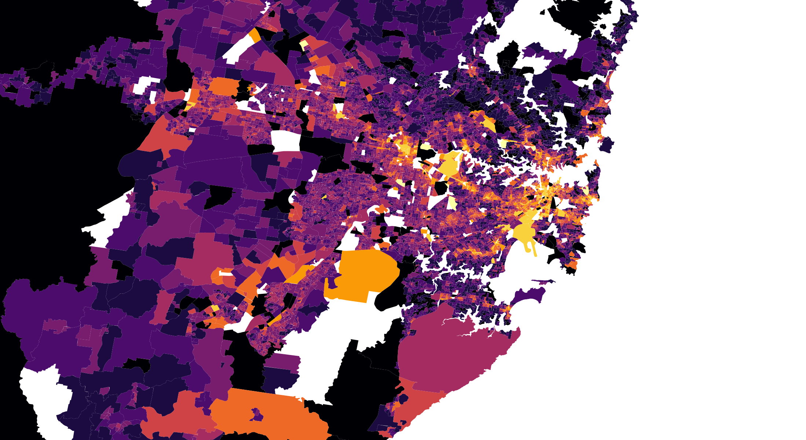

What is the data set?
The data set describes 'Place of Usual Residence on Census Night by Age'
Why is this data collected?
The data is collected to study the population of Australia. It is collected every 10 years so that there may be a benchmark data for future studies. The data collected may be useful to lawmakers, as well as marketing companies, political groups or for the curiosity of the general public.
Collecting the data; 'Place of Usual Residence on Census Night by Age' could provide broader information on where larger or smaller families reside in NSW, rate of homelessness or indicate a story on Sydney's housing crisis. Collating this information with other data such as 'Water/Energy usage' can also provide Government. Logistical needs.
Which government department would use this? Provide evidence.
Which private sector would use this? Provide evidence
How does the data set change the way you think about space?
The data set helps to visualise where the growing population settle to and over time, see how lawmakers and the government plan cities to supply for demand. In terms of space, it visualise and spread data of individual locations and ages across a map.
How does this change across Sydney?
The trend is that there are less young people 0-14yo residing in the inner west and city areas. There is a contrast however with people aged 25-34 years. They are more concentrated in the city area - perhaps closer to work and the city night life.
How does it reflect the latte line?
How has it changed over time between 2011 and 2016?
How significant is this data for people across Sydney?
Would it be good to change the data set?
If you could change it, how would you go about changing it?
